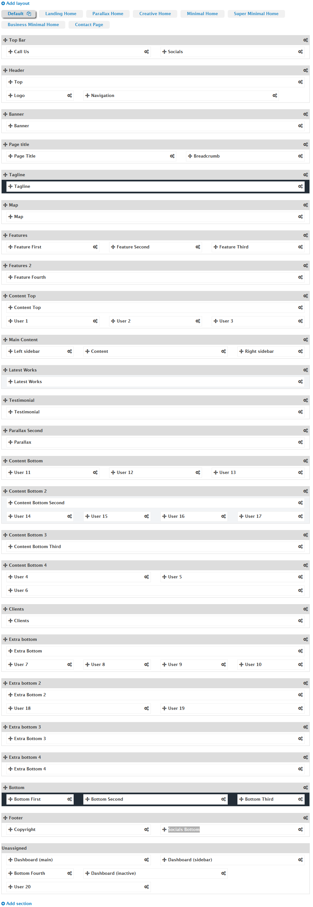
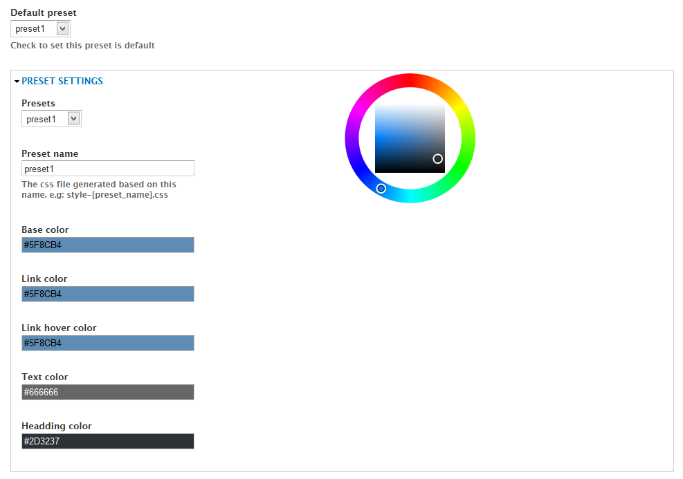
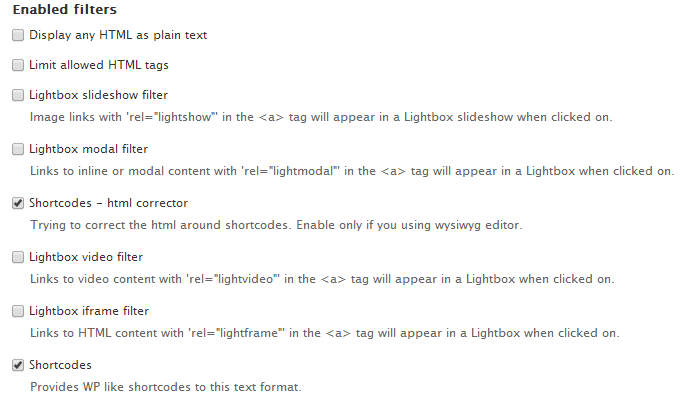
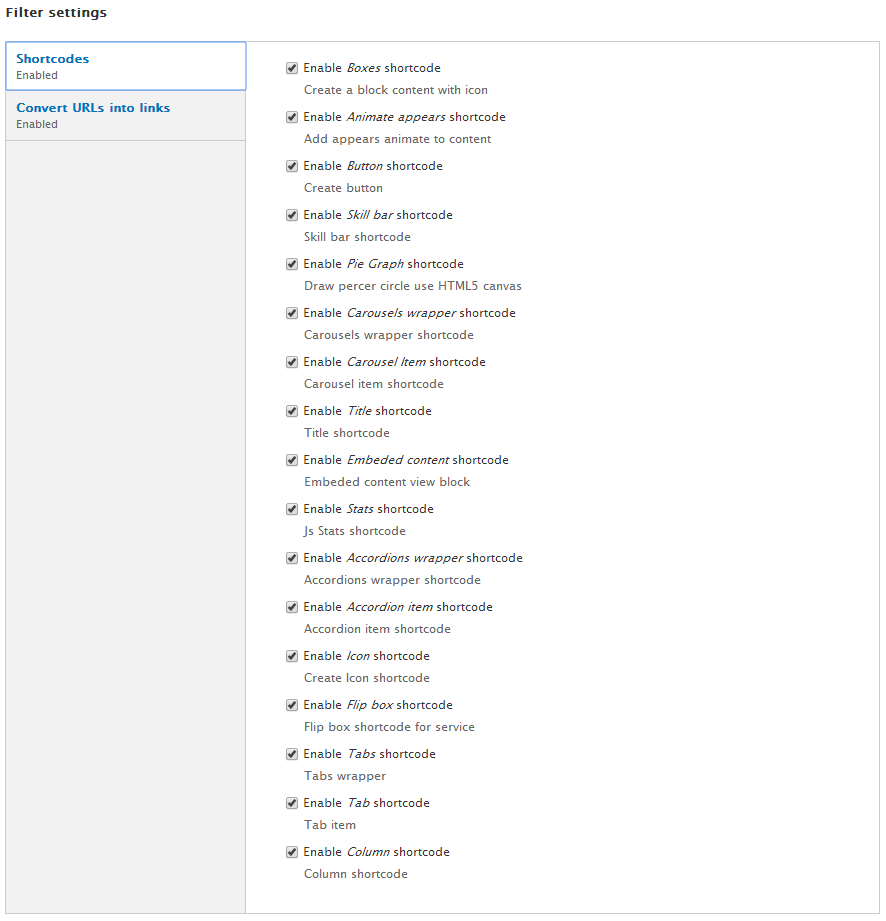
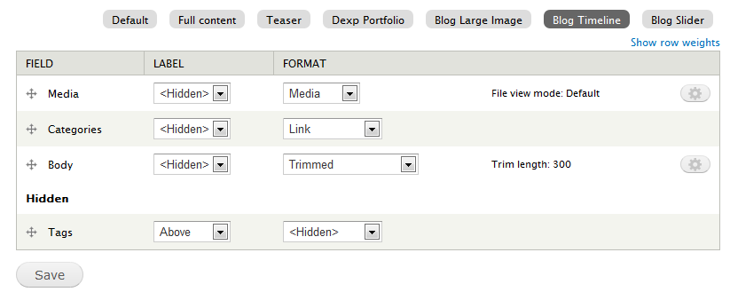
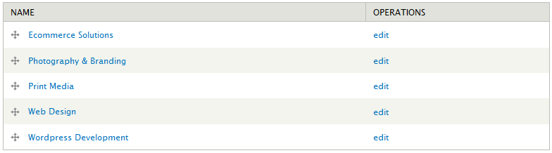
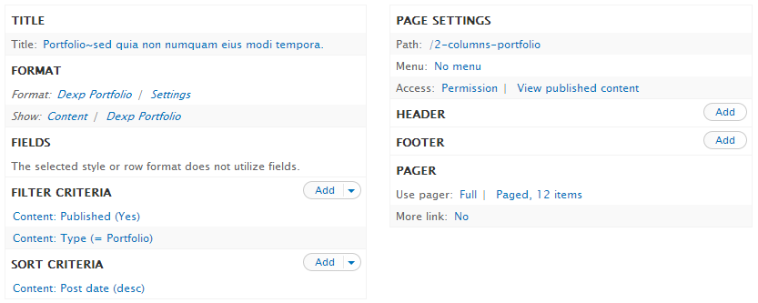
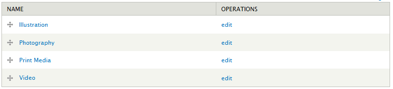

Copyright DrupalExp 2014
made with the Documenter v2.0
made with the Documenter v2.0
Thank you for purchasing the theme, If you have questions please submit your ticket to support forum
Evolve is a professional multipurpose Drupal theme for any business or portfolio website, it’s drap & drop page builder with fully responsive design and retina ready, looks stunning on any device. It features a very clean and professional design that is perfect for showcasing your work, and have tons of layout possibilities with unlimited variations and colors. Template can be used for any type of website: business, corporate, portfolio, products, marketing, etc.
Feel free to visit our support forum if you need any support for the theme that cannot be found in this documentation.
Full installation
The quickstart package came with theme helps you to build a copy of our live demo at http://demo.themesvision.com/drupal/evolve. It is the highly recommended way for newbies or if you don’t want to go through the individual setup of each module and theme.
STEPS to do:
Profile installation
Provided with this package is a Drupal install profile (called drupalexp_evolve) which is used to quickly install new sites with the EVOLVE theme. This profile will install all required modules and setup the EVOLVE theme as the default them
STEPS to do:
Theme Only
The following explains how to install the theme with existing sites. In order to do this there are several steps that must be completed.
Evolve theme provides many settings which help you control your site very easily. By access to Appearance ￫ Settings ￫ Evolve you can see settings as below:
Evolve sub theme extends from Drupalexp framework provides the ability to build any responsive layout you can think of by using simple actions such as Drag & Drop elements on UI. It also supports to create multiple layouts, so you can show your pages with different shapes very easily.

Figure : Sample layout in Evolve theme
Top Bar, Header, Page Title... with gray background called sections. Elements in each of section and unassigned area called regions.
Using this framework you can move to change the order of sections and regions, set the widths of individual block regions or remove from the site layout.
In Evolve theme, you can build unlimited layouts. To create a new layout, click on Add layout link, the system will create a copy of Default layout that.
You can customize on this layout to get layout which you like by
To clone a layout, click on the name of layout which you want to duplicate. After that, click on clone icon to create a duplicate of layout was chosen.
To remove a layout, click on the name of the layout which you want to clone (except default layout). After that, click on delete icon to remove this layout from Evolve theme.
When you create a new layout, you can set pages will be display with this layout by inputting path to Pages Assignment textarea at bottom layout.

You can re-order sections or move regions in section to other sections. Ex: If you want banner section to appear above header section, you can drag the banner section above the header and save the settings. Saving these settings will automatically apply these changes when you view the front end of your site. Additional, you can customised through:
Similar to sections, you can use the same arrows per region to change the order at which they are rendered within each of section or move them to another sections.
By clicking the gears icon on each region you can set width to each region on different devices.
Based on Twitter Bootstraps 3.x with 12 columns system, you can specify the width of each region. All regions within each section of the theme should add up to 12 cols.

Evolve theme provides 14 colors to get you started and you can define unlimited additional color. To set default color for the theme by clicking on Presets vertical tab at the left side and choose color in dropdown labeled Default preset
The Preset settings provide the functionality to create your own colors so that you can have full control over the color scheme of your website.

It is ONLY use in layout boxed. Now, we support 14 custom class from bg1 to bg14 for background site. You can define more your owner classes to custom background image site which you think.
Enable
Disable
animation effect on specific pages by inputting Drupal paths to Pages textarea.
Note: We can use wildcard character such as * in path
By accessing to DrupalExp ￫ Page Settings menu, you can configure sub title page by putting a split character to split between title and sub-title. We use "~" character such as default. You can modify to any character which you like.

Please follow this video to make slider https://www.youtube.com/watch?v=2-km9lH9-Ss
When you write content for your website, chances are, you’ll use a lot of the same HTML and CSS to include special functionality on specific pages. The problem is, repeating this code, day in and day out, can be tedious and prone to errors. Shortcodes are just that, short bits of code that cut down on repetitive strings of HTML, and can be inserted anywhere in your site.
The available shortcodes can be activated by going to Configuration ￫ Text Formats ￫ Full HTML ￫ Configure. Once here you need to enable the Shortcodes filter. This will enable the module filter to be able to setup available shortcodes.


The following shortcodes are included with Evolve theme. You can see shortcode demo at Shortcode Evolve demo by accesing to Features ￫ Shortcodes menu
Accordion shortcode allows you to provide multiple panes and display them one at a time. We can create an accordion quickly by using syntax as below:
[accordions]
[accordion title="TITLE_ITEM_1"]Content Item 1 here[/accordion]
[accordion title="TITLE_ITEM_2"]Content Item 2 here[/accordion]
[accordion title="TITLE_ITEM_{I}"]Content Item {I} here[/accordion]
[/accordions]
Tabs shortcode is used for structuring content with tabs (uses DIVs). Each tab has title and content. When certain tab is selected, its content is displayed. Each tab can have two states - selected and unselected. You can insert horizontal or vertical tabs.
We can create a tab quickly by using syntax as below:
[tabs class="STYLE"] [tab title="TITLE_ITEM_1" icon="ICON_NAME_ITEM_1"]Content Item 1 here[/tab] [tab title="TITLE_ITEM_2" icon="ICON_NAME_ITEM_2"]Content Item 2 here[/tab] [tab title="TITLE_ITEM_3" icon="ICON_NAME_ITEM_3"]Content Item 3 here[/tab] [/tabs]
NOTE: STYLE can be one of values
We can create a featured box quickly by using syntax as below:
[box align="left|right|center" border ="yes|no" background="yes|no" icon="ICON" title="TITLE"]CONTENT HERE[/box]
We can create a service box quickly by using syntax as below:
[flipbox type='icon|img' icon='ICON' image='IMAGE' title='TITLE']CONTENT[/flipbox]
Pie chart bar displays status of a determinate or indeterminate process. We can create a pie chart quickly by using shortcode with syntax as below:
[piegraph percent="PERCENT" title="TITLE"][/piegraph]
[skillbar percent='']Title[/skillbar]
The carousels are a dynamic presentation of contents where text and images are made visible or accessible to the user by cycling through several items. We can create a carousels bar quickly by using shortcode with syntax as below:
[carousels] [carousel path="PATH_TO_IMAGE"]CAPTION_HERE[/carousel] [carousel path="PATH_TO_IMAGE"]CAPTION_HERE[/carousel] [carousel path="PATH_TO_IMAGE"]CAPTION_HERE[/carousel] [/carousels]
You can easily add any of built in icons from Font Awesome to your sites with our new icon shortcodes by using syntax:
[icon name="NAME" link="URL"]TEXT_HERE[/icon]
NAME is a valid class name in font owesome
Access to http://fortawesome.github.io/Font-Awesome/icons/ to get valid classes
Example: fa-adjust, fa-anchor...
You can create beautiful buttons on the fly using the button shortcode. Choose between various colors, styles and sizes. We can create s button by using shortcode with syntax as below:
[button size="SIZE" bg="BACKGROUND_COLOR" type="TYPE" color="TEXT_COLOR" url="LINK_TO"][/button]
SIZE property can be one of values:
You can create a statistics item to run by javascript by syntax:
[stats timer="TIMER NUMBER" number="NUMBER VALUE" class="brddark"]TITLE[/stats]
With the column layout shortcodes you can now break down your content into any number of advanced layouts giving variety and hierarchy. We can create column layout quickly by using shortcode with syntax as below:
[column cols="NUM_OF_COLS" begin="0-OR-1" end="0-OR-1"]CONTENT HERE [/column]
Example:
- Shortcode of 2 columns (width = 1/2):
[column cols="6" begin="1"]CONTENT HERE [/column] [column cols="6" end="1"]CONTENT HERE [/column]
- Shortcode of 3 columns (width = 1/3):
[column cols="4" begin="1"]CONTENT HERE [/column] [column cols="4"]CONTENT HERE [/column] [column cols="4" end="1"]CONTENT HERE [/column]
- Shortcode of 4 columns (width = 1/4):
[column cols="3" begin="1"]CONTENT HERE [/column] [column cols="3"]CONTENT HERE [/column] [column cols="3"]CONTENT HERE [/column] [column cols="3" end="1"]CONTENT HERE [/column]
- Shortcode of 2 columns (width = 1/4 and 3/4):
[column cols="3" begin="1"]CONTENT HERE [/column] [column cols="9" end="1"]CONTENT HERE [/column]
The Drupalexp Block module allows any block in the system to utilise color background and animate the content using CSS3 animations

This setting provides the ability to visibility block belong to devices. (different size)
The Drupalexp Blog module of Evolve theme provides 4 viewer styles for blog page. You can use any media such as image, vimeo or youtube video in this page.
By accessing to Structure ￫ Content types ￫ Article ￫ Manage Display ￫ View mode name (Ex: Blog Timeline). You can customize style of blog page such as re-order field to change the way to show content or put a field to hidden to hide it in blog page.

Additional, to manage blog categories, go to Structure ￫ Taxonomy ￫ Blog Categories menu to add new item or modify it.

The Drupalexp Portfolio module combine with Drupal BxSlider module to allow dynamic portfolio pages to be created quickly and easily. It provides an excellent starting point for those who want to build a portfolio.

To manage portfolio categories, go to Structure ￫ Taxonomy ￫ Portfolio Categories menu to add new item or modify it.
